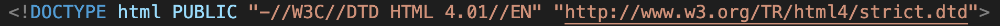
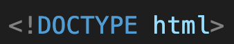
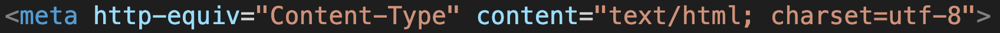
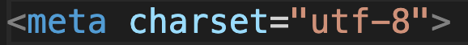
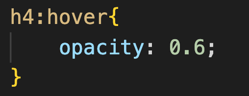
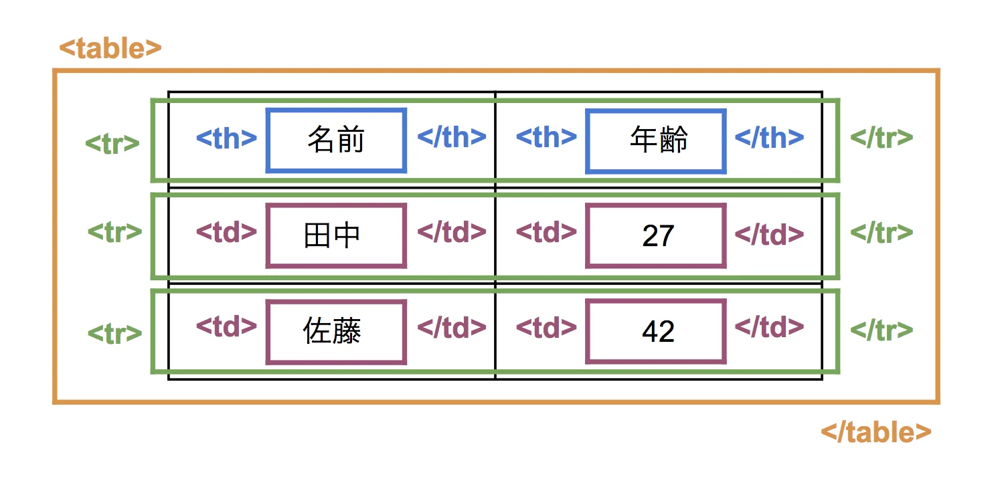

1.HTML4.01とHTML5の違いについて
HTMLにはこれまでにいくつかのバージョンがあり、一つ前のバージョンがHTML4.01となっています。
そして、最新のバージョンがHTML5となっており、HTML4.01と比べていくつか違いがあります。
大きな違いとして、
- DOCTYPE宣言方法が変わった
- headerやfooterなどの新しいタグが追加された
2つの違いや変更方法を理解していきましょう。
（DOCTYPE宣言とは、その文書がHTMLであることや、どのバージョンで作成されているかを宣言するもの）
HTML4.01のDOCTYPEの宣言
HTML5のDOCTYPEの宣言
このように、HTML5のDOCTYPE宣言の方がとても短くなっています。
そのため、問題で「DOCTYPEの宣言をHTML 4.01からHTML5に変更する」という内容が問われたら、上記のように変更しましょう。
変更方法は、HTML4.01のDOCTYPE宣言のいらない所を消すだけです。
2.meta charset="utf-8"について
「meta charset="utf-8"」と書くことにより、HTMLで使われる文字コード（utf-8）を指定しています。これにより、文字化けが防げたりします。
「これを書くことで文字化けが防げるから書く」くらいの認識で大丈夫なので、深く覚える必要はありません。
実際の検定問題では、「文字コードがあるmeta要素のhttp-equiv属性とcontent属性を削除し、以下の属性を追加する」という問題が問われるため、
どのように変更すればいいのか見てみましょう。
変更前
変更後
このように、いらない所を消すだけです。
3.要素について
検定では、様々な要素に関する問題が出題されます。
要素の言葉や意味をしっかりと理解し、焦らず問題を解けるようにしていきましょう。
| 要素 | 要素の意味 |
|---|---|
| header | サイトのトップ部分を表す |
| nav | ナビゲーション部分を表す |
| section | 1つのまとまりであることを表す |
| aside | 関連記事や補足情報などを示す |
| footer | 文書の下部を示す |
| smal | 著作権表示などの小さく表示される文を示す |
4.マウス(カーソル)が載った時の動きについて
マウス(カーソル)が載った時に、色を変えたり透明度を変える時には、〇〇:hoverという擬似クラスを使います。
下の赤い文字(h4)に「カーソルが載ったときに赤い文字の透明度を変える」というプログラムを作るときは、以下のようなプログラムになります。
カーソルを乗せたら色の透明度が変わるよ！ 
要素の透明度を設定する時には「opacity」を使います。
設定出来る数値は、0から1までの間の数値となっており、0は完全な透明に、1は通常の色になります。
5.ファイルの複製・名前の変更について
検定問題では、元のファイルを複製し、複製したファイルの名前を変更してそのファイルにプログラムを書いていきます。
そのため、ファイルの複製方法とファイル名の変更方法について、しっかり理解をしておきましょう。
複製や名前の変更の画面は、ファイルにカーソルを当てて「右クリック」をすれば出てきます。
6.相対パスと絶対パスについて
検定問題では、URLはすべて相対パスで記述しなければなりません。
そのため、相対パスと絶対パスについて理解をしておきましょう。
絶対パスとは？
ファイルを最初から最後まで完全に記述する形式のこと。
HTMLファイルが「stapro」というフォルダの中にあると仮定し、「stapro」というフォルダの中の「pc」というフォルダの中に入っている「mac.jpg」という画像を挿入したい時には、以下のように記述する必要があります。
stapro/pc/mac.jpg
このように、それぞれの階層ごとにスラッシュで区切り、URLを全て記述するのが絶対パスです。
相対パスとは？
現在いるファイルを起点とした、目的ファイルまでの経路のこと。
CSSファイルが「css」というフォルダの中にあると仮定し、「PC」というフォルダの中に入っている「mac.jpg」という画像を挿入したい時には、以下のように記述する必要があります。
../pc/mac.jpg
このように、ひとつ上のフォルダ内にある特定のフォルダのなかのファイルを参照する場合は「../」を付けて参照します。
7.テーブルについて
検定問題では、テーブルについて出題されるので、それぞれの意味をしっかり理解しておきましょう。
tr・・・表の行を意味する（テーブルロウ）
th・・・表の見出しを意味する（テーブルヘッド）
td・・・表のデータを意味する（テーブルデータ）
表として見た時、それぞれの値は以下のようになります。
その他に、これらの意味についてもしっかり理解しておきましょう。
scope="col"・・・指定したth要素が縦方向のセルの見出しであることを意味する
scope="row"・・・指定したth要素が横方向のセルの見出しであることを意味する
rowspan="数字"・・・指定された数だけ下方向にセルを結合する方法
colspan="数字"・・・指定された数だけ横方向にセルを結合する方法
テーブルはとてもややこしいので、自分で一度テーブルを作ってみましょう！
そして、そのテーブルを結合したり、文字を入れて使い方をマスターしましょう！
8.テキストの入力フォームについて
検定問題では、テキストの入力フォームを作る問題が出題されます。
テキストの入力フォームには、様々な種類がありますが、今回は検定に出てくる3つの入力フォームについて理解を深めましょう。
①1行のテキストを入力するフォーム
1行のテキストを入力するフォームは以下のように記述します。
input要素に type="text" を指定すると、1行のテキスト入力欄を作成することができます。
nameには、名前を指定してあげます。classにはclass名を記入します。
そのほかにも様々な値を指定することができますが、検定問題では問われないため、ここまでを理解しておきましょう。
②複数行のテキストを入力するフォーム
複数行のテキストを入力するフォームは以下のように記述します。
textareaとは、複数行の入力が可能な入力欄を作成するためのタグです。
nameには、名前を指定してあげます。colsではテキストの幅を文字数で指定します。rowsではテキストの高さを指定します。
今回は、横幅50文字、縦が4行のフォームということになります。
③送信ボタン
送信ボタンを作るには以下のように記述します。
input要素に type="submit" を指定すると、送信ボタンを作成することができます。
valueには、ボタンに表示させたい文字を記入します。
また、入力した文字がテキストエリアからはみ出た時、はみ出た部分が隠れてスクロールできる状態にする
「overflow: scroll;」というプロパティがあります。